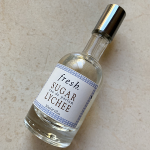

Nhóm nước hoa: Hương cam chanh thực phẩm
Giới tính: Unisex
Độ tuổi khuyên dùng: Trên 25
Năm ra mắt: 2007
Nồng độ:
Nhà pha chế:
Độ lưu hương: Kém - 1 giờ đến 2 giờ
Độ toả hương: Rất gần - Thoang thoảng trên làn da
Thời điểm khuyên dùng: Ngày, Đêm, Xuân, Hạ